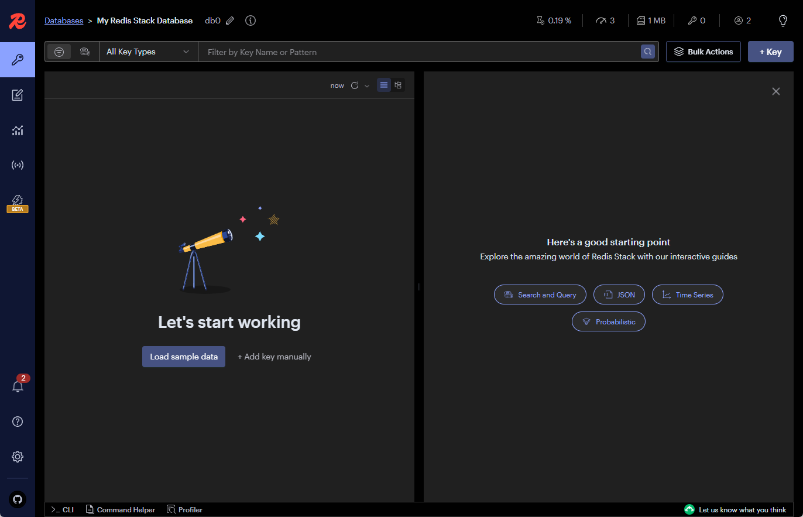
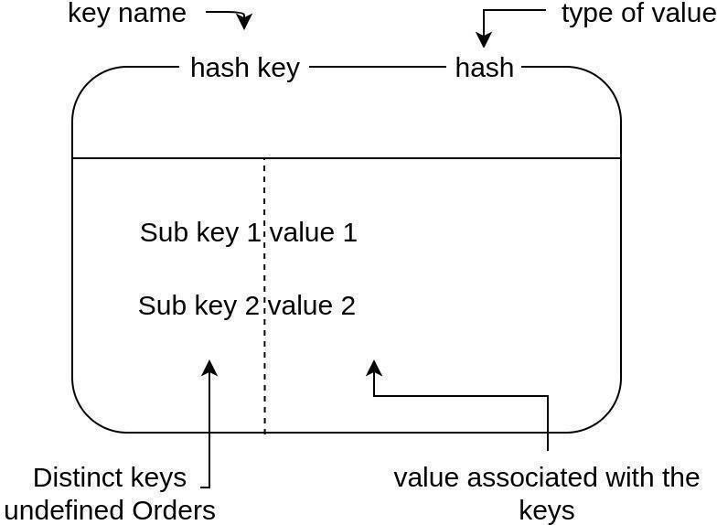

Redis
Propuesta didáctica¶
Seguimos trabajando el siguientes resultados de aprendizaje (RA):
- RA7: Gestiona la información almacenada en bases de datos no relacionales, evaluando y utilizando las posibilidades que proporciona el sistema gestor.
Criterios de evaluación¶
- CE7c: Se han identificado los elementos utilizados en estas bases de datos.
- CE7d: Se han identificado distintas formas de gestión de la información según el tipo de base de datos no relacionales.
- CE7e: Se han utilizado las herramientas del sistema gestor para la gestión de la información almacenada.
Contenidos¶
Bases de datos no relacionales:
- Elementos de las bases de datos no relacionales.
- Sistemas gestores de bases de datos no relacionales.
- Herramientas de los sistemas gestores de bases de datos no relacionales para la gestión de la información almacenada.
Cuestionario inicial
- ¿En qué consiste una base de datos clave-valor?
Programación de Aula (5h)¶
Seguimos con la unidad 12, y tras haber introducido los conceptos y elementos de los sistemas NoSQL, vamos a profundizar en el manejo de Redis, con una duración estimada de 5 horas:
| Sesión | Contenidos | Actividades | Criterios trabajados |
|---|---|---|---|
| 5 | Redis. CRUD | ||
| 6 | Tipos de datos | ||
| 7 | Mensajería | ||
| 8 | Proyecto I | ||
| 9 | Proyecto II |
Redis¶
Redis es una base de datos NoSQL open source en memoria, con un modelo de datos de clave-valor, que permite el cacheo de los datos y funcionar como un broker de mensajería. Soporta estructuras de datos como cadenas, hash, listas, conjuntos, conjuntos ordenador con consultas por rango, así como otras estructuras más específicas como mapas de bit, consultas radius, índices geospaciales, etc...
El nombre Redis proviene de las iniciales de Remote Dictionary Server (servidor de diccionario remoto), un tipo de servidor apto como memoria rápida para datos, permitiendo su uso como una base de datos en memoria y como de clave-valor.
Características¶
Redis almacena los datos como pares clave-valor, donde:
- Cada clave (key) es un identificador único (similar a una clave primaria en SQL)
- Cada valor (value) puede ser de diferentes tipos (cadena, lista, hash, etc...)
Este modelo es fundamentalmente diferente del modelo relacional:
| Característica | Redis (clave-valor) | SQL (relacional) |
|---|---|---|
| Estructura | Plana, no relacional | Tabular, relaciones entre entidades |
| Esquema | Flexible, sin esquema fijo | Rígido, esquema predefinido |
| Consultas | Basadas en claves | Basadas en conjuntos (SELECT) |
| Transacciones | Soporte básico con comandos MULTI/EXEC | Completo soporte ACID |
Cuando decimos que Redis es una base de datos en memoria, estamos indicando que el servidor almacena todos los datos en la memoria principal (RAM), ya que es la manera más rápida para almacenar y recuperar datos. Esto permite que Redis funcione como memoria caché y también como unidad de memoria principal, con independencia de si los datos permanecen en la base de datos por mucho o poco tiempo. Así pues, en un servidor Redis con su uso principal, los datos no se guardan en el disco duro, sino en la memoria principal.
Gracias a ser un almacén clave-valor, ofrece un alto rendimiento y puede escalarse fácilmente. Para cada entrada se crea una clave mediante la que se puede volver a solicitar la información en cuestión. Esto implica que las entradas no necesitan estar relacionadas entre sí ni tampoco consultarse con varias tablas diferentes, sino que la información está disponible de manera directa.
¿Y si falla el servidor o se va la luz? ¿Corremos el riesgo de perder todos los datos? Para evitar que eso ocurra, Redis puede, o bien hacer regularmente un duplicado de todos los datos en un disco duro secundario (persistencia RDB - ???), o bien guardar en un archivo de registro todas las órdenes necesarias para llevar a cabo una reconstrucción (persistencia AOF - Append Only File).
Finalmente, respecto a la escalabilidad, como solución NoSQL, si toda la información no cabe es un único nodo, el sistema puede escalar horizontalmente añadiendo más nodos. Si cada nodo puede almacenar 64GB RAM, y tenemos 4 servidores, podríamos almacenar hasta 256GB de datos en nuestro servidor Redis.
Hablemos de tamaños
Un millón de cadenas almacenadas en Redis ocupan aproximadamente 85MB de almacenamiento.
Una instancia vacía de Redis utiliza 3 MB de RAM.
Los valores en Redis son de 64 bits.
En teoría, Redis puede almacenar 2^32 claves en una única instancia Redis. En la práctica, hay servidores de una única instancia con 250 millones de claves.
Puesta en marcha¶
Aunque podemos instalar Redis en cualquier sistema operativo, en nuestro caso, vamos a centrarnos en hacerlo mediante un contenedor Docker.
La primera posibilidad es instalar la imagen redis/redis-stack-server mediante el comando:
docker run -d --name redis-stack-server -p 6379:6379 redis/redis-stack-server:latest
Si en cambio, queremos utilizar el stack de Redis que también incluye la herramienta gráfica Redis Insight en el puerto 8001 para administrar el sistema, usaremos la imagen redis/redis-stack mediante el comando:
docker run -d --name redis-stack -p 6379:6379 -p 8001:8001 redis/redis-stack:latest
Si accedemos a http://localhost:8001/ accederemos a la página de inicio:

Redis cloud
Instalar como cliente Redis Insight
Redis-cli¶
Pero de momento vamos a centrarnos en el uso mediante la consola y acceder al cliente interactivo mediante redis-cli:
redis-cli
# 127.0.0.1:6379>
Al ejecutar un comando, siempre recibiremos una respuesta en la línea inferior. Por ejemplo, vamos a comprobar la conectividad haciendo PING:
127.0.0.1:6379> PING
# PONG
Si no hubiéramos podido conectarnos, habríamos recibido un mensaje de error. Mediante help aparecerá, además de la versión instalada, una lista de opciones de ayuda, así como la posibilidad de obtener más información de un comando concreto:
127.0.0.1:6379> help
# redis-cli 7.2.5
# To get help about Redis commands type:
# "help @<group>" to get a list of commands in <group>
# "help <command>" for help on <command>
# "help <tab>" to get a list of possible help topics
# "quit" to exit
CRUD¶
En este apartado vamos a simular que queremos crear un acortador de URLs, del tipo bit.ly, de manera que cuando un usuario pone una URL corta, accederíamos a la URL larga, lo que también nos permite llevar un contador de las visitas a cada dirección.
Usaremos los comandos SET y GET para asignar y recuperar un valor de una clave. SET siempre requiere dos parámetros, la clave y el valor, mientras que GET sólo permite recuperar por la clave:
127.0.0.1:6379> SET aitor-bd aitor-medrano.github.io/bd
OK
127.0.0.1:6379> GET aitor-bd
"aitor-medrano.github.io/bd"
Si queremos hacer más de una entrada de una sola vez usaremos MSET y MGET:
127.0.0.1:6379> MSET aitor-iabd aitor-medrano.github.io/iabd aitor-blog aitor-medrano.github.io/iabd/blog
OK
127.0.0.1:6379> MGET aitor-bd aitor-iabd aitor-blog
1) "aitor-medrano.github.io/bd"
2) "aitor-medrano.github.io/iabd"
3) "aitor-medrano.github.io/iabd/blog"
Aunque Redis almacene cadenas, también permite almacenar números enteros y realizar ciertas operaciones sobre ellos, como INCR para incrementar de uno en uno INCRBY para indicar la cantidad, y sus contrarios DECR y DECRBY:
127.0.0.1:6379> SET contador 2
OK
127.0.0.1:6379> INCR contador
(integer) 3
127.0.0.1:6379> GET contador
"3"
127.0.0.1:6379> INCRBY contador 2
(integer) 5
127.0.0.1:6379> DECR contador
(integer) 4
Transacciones¶
De la misma forma que hemos visto en MariaDB, necesitamos de alguna manera poder agrupar dos o más operaciones como si fuera una operación atómica. Para ello, usaremos el comando MULTI para inicial el bloque de instrucciones, y EXEC para confirmar la transacción. En el caso de querer hacer un rollback, usaremos el comando DISCARD:
127.0.0.1:6379> MULTI
OK
127.0.0.1:6379(TX)> SET aitor-dwes aitor-medrano.github.io/dwes2122
QUEUED
127.0.0.1:6379(TX)> INCR contador
QUEUED
127.0.0.1:6379(TX)> EXEC
1) OK
2) (integer) 5
Estructuras de datos¶
La estructura de datos típica de Redis está formada por las llamadas Strings, es decir, cadenas simples de caracteres.
El uso de Strings permite almacenar datos de forma genérica, como por ejemplo, serializando cualquier dato en una cadena o utilizando documentos JSON. Conviene destacar que el tamaño máximo es de 512 MB.
Como convención de código, se utilizan los dos puntos (:) como separador de las palabras o niveles en las claves:
127.0.0.1:6379> MSET usuario:aitor:nombre "Aitor Medrano" usuario:aitor:pwd "123456"
OK
127.0.0.1:6379> MGET usuario:aitor:nombre usuario:aitor:pwd
1) "Aitor Medrano"
2) "123456"
El sistema, sin embargo, es también compatible con otras estructuras de datos. Veamos las más destacadas
Hash¶
-
Estructura
Un mapa o hash en Redis es similar a un documento JSON, donde se mapea una clave con un valor.

Hashes en Redis Se utiliza para almacenar objetos ligeros, como las sesiones de usuario, los propios datos del usuario, visitantes, etc...
Destacar que sus valores siempre serán cadenas, es decir, no puede anidar otros mapas o conjuntos.
-
Comandos
Para interactuar con un Hash utilizaremos los comandos
HSETpara asignar valores,HKEYSpara recuperar todas las claves yHVALSpara recuperar todos los valores, oHGETpara recuperar una clave concreta:127.0.0.1:6379> HSET usuario:aitor nombre "Aitor Medrano" pwd "123456" OK 127.0.0.1:6379> HVALS usuario:aitor 1) "Aitor Medrano" 2) "123456" 127.0.0.1:6379> HKEYS usuario:aitor 1) "nombre" 2) "pwd" 127.0.0.1:6379> HGET usuario:aitor nombre "Aitor Medrano"Otros comandos más específicos son
HDELpara elimina campos,HINCRBYpara incrementar un campo cierta cantidad,HLENpara obtener la cantidad de campos,HGETALLpara recuperar todas las claves y valores yHSETNXpara asignar una valor sólo si la clave no existe (ya que si existe, medianteHSETsiempre la sustituye).
Lista¶
-
Estructura
Las listas en Redis son como un array de cadenas, teniendo en cuenta que los elementos se ordenan por orden de inserción. Pueden funcionar como colas FIFO (first in, first out) o como pilas LIFO (last in, first out).
Se implementan mediante listas enlazadas, lo que provoca que las operaciones en la cabeza y en la cola ocurran con complejidad constante, independientemente del tamaño de la lista. En cambio, acceder a un elemento determinado, supone recorrer la lista elemento por elemento. En este caso, es mejor utilizar conjuntos ordenados.
En Redis, la cabeza (head) es el extremo izquierda y la cola (tail) el derecho.

Listas en Redis Casos de uso:
- Implementar colas como estructuras de datos
- Cronogramas de mensajes (feed de una red social, logs recientes, etc...)
- Listado de tareas, para su procesamiento en el orden de adicción.
-
Comandos
Para interactuar con un lista utilizaremos los comandos
LPUSHpara insertar valores por la izquierda yLPOPpara sacarlos, y sus homónimosRPUSHyRPOPpara hacerlo por la derecha. Si queremos recuperar un subconjunto de elementos, usaremosLRANGE, mientras que para averiguar la longitud de la lista usaremosLLEN.Supongamos que queremos asignarles a nuestros usuarios una lista de URL favoritas. Para ello, podríamos hacer:
127.0.0.1:6379> RPUSH aitor:enlaces aitor-bd aitor-iabd aitor-blog (integer) 3 127.0.0.1:6379> LLEN aitor:enlaces (integer) 3 127.0.0.1:6379> LRANGE aitor:enlaces 0 -1 1) "aitor-bd" 2) "aitor-iabd" 3) "aitor-blog"Todas las operaciones de listas utilizan un acceso 0-index, donde un valor negativo indica el número de pasos desde el final.
Para sacar elementos
En resumen, para que funciones como una pila, usaremos .... Mientras que para que lo haga como una cola, usaremos...
En Java
Si queremos sacar, con un único comando, valores de la cola para insertarla en la cabeza de otra, usaremos
RPOPLPUSH(right pop, left push):127.0.0.1:6379> RPOPLPUSH aitor:enlaces pedro:visitadosIt can be replaced by LMOVE with the RIGHT and LEFT arguments when migrating or writing new code.
Conjunto¶
-
Estructura
Se parecen a las listas en que almacenan una colección de cadenas, pero los elementos no están ordenados, y los conjuntos sólo almacenan elementos únicos.
Por lo tanto, no podemos y elementos. En cambio, podemos añadir y eliminar elementos de un conjunto. Aparte de añadir y eliminar, podemos realizar varias operaciones en conjuntos, como la unión, la intersección, etcétera. Se realizan del lado del servidor en Redis, por lo que son muy rápidas.
¿Cuándo debemos considerar el uso de Redis Sets? Siempre que no estés considerando la cardinalidad o no te importe cuántos elementos están presentes para un mismo tipo. En esos casos, almacene los datos en Redissets.
Los Redissets son una buena manera de tener entidades únicas registradas y almacenadas. La sobrecarga de mantener una búsqueda para, si el elemento existe o no se toma el cuidado des. Usted puede pensar en el uso de conjuntos Redis para almacenar la lista de usuarios únicos que visitaron su sitio web."
-
Comandos
Para interactuar con un Hash utilizaremos los comandos
HSETpara asignar valores,HKEYSpara recuperar todas las claves yHVALSpara recuperar todos los valores, oHGETpara recuperar una clave concreta:127.0.0.1:6379> HSET usuario:aitor nombre "Aitor Medrano" pwd "123456" OK 127.0.0.1:6379> HVALS usuario:aitor 1) "Aitor Medrano" 2) "123456" 127.0.0.1:6379> HKEYS usuario:aitor 1) "nombre" 2) "pwd" 127.0.0.1:6379> HGET usuario:aitor nombre "Aitor Medrano"Otros comandos más específicos son
HDELpara elimina campos,HINCRBYpara incrementar un campo cierta cantidad,HLENpara obtener la cantidad de campos,HGETALLpara recuperar todas las claves y valores yHSETNXpara asignar una valor sólo si la clave no existe (ya que si existe, medianteHSETsiempre la sustituye).
Conjuntos ordenados¶
Como conjunto, el conjunto ordenado también es una colección de cadenas únicas. A diferencia de un conjunto normal, los valores de un conjunto ordenado están ordenados. ¿Cómo se realiza la ordenación?

La ordenación se basa en las puntuaciones y el orden léxico (orden alfabético) de las cadenas. Así, cada cadena es única, aunque cada puntuación puede ser igual. ¿Cómo se realiza la puntuación de estos valores? Redis no se encarga de dar una puntuación a un valor, ya que puede haber múltiples formas de asignar una puntuación. En su lugar, se proporcionan operaciones para que los usuarios puedan manipular una puntuación para un elemento del conjunto. Así, además de la estructura de datos de lista, los conjuntos ordenados son la única estructura de datos ordenada disponible. Los conjuntos ordenados son preferibles a las listas cuando el acceso rápido a un miembro concreto es más importante que la rapidez de inserción/eliminación. La complejidad temporal de la inserción/eliminación en un conjunto ordenado es O(N), donde N es el número de elementos del conjunto. ¿Cuándo debemos considerar el uso de Redis Sorted Sets? Cuando se desea mantener el orden, se opta por un conjunto ordenado en lugar de un conjunto normal.
"Para utilizar un conjunto ordenado, deberíamos definir un "sistema de puntuación". Los conjuntos ordenados de Redis son ideales para casos de uso como los usuarios más comprometidos, etc. Los casos de uso comunes que utilizan conjuntos ordenados Redis son los siguientes:"
"Leaderboards": Almacena los nombres de los máximos goleadores ordenados por sus puntuaciones. Listas de preguntas y respuestas: Muchas plataformas de preguntas y respuestas, como Stack Overflow, utilizan conjuntos ordenados para almacenar preguntas basadas en las mejores puntuaciones y votos."
Otras estructuras de datos menos comunes son:
- Bitmaps: estructura compacta que permite operaciones a nivel de bit.
- HyperLogLog: estimación según valores unívocos
- Stream: lista de strings o pares complejos de key-value
Puesto que Redis es un sistema de código abierto, hay muchos desarrolladores trabajando para ampliar el sistema. Los llamados módulos o ampliaciones aumentan el rango de funciones de la base de datos, que por lo demás es bastante sencilla, y adaptan el software a ámbitos de uso específicos.
Casos de Uso¶
Redis es de código abierto y cualquiera puede usarlo de forma gratuita. Está patrocinado principalmente por la empresa Redis Labs, que ofrece versiones en la nube, de pago, de este programa.
¿Para qué ámbitos de aplicación es más adecuado? Un escenario estándar de Redis es el almacenamiento en caché, para lo cual también Twitter utiliza esta base de datos, por ejemplo: la propia timeline en el servicio de mensajería es posible gracias a una caché de Redis. La timeline se compone principalmente de una lista que, gracias a Redis, puede solicitarse fácilmente y ampliarse de forma incremental.
No obstante, Redis también se utiliza para otros fines. Gracias a su velocidad de respuesta, por ejemplo, esta base de datos es perfecta para servicios de mensajería o chat rooms. El sistema puede mostrar las nuevas entradas en tiempo real y actualiza regularmente las listas.
https://www.ionos.es/digitalguide/hosting/cuestiones-tecnicas/redis-tutorial-paso-a-paso/
Referencias¶
- Redis University
- El libro Redis Deep Dive, de Suyog Dilip Kale y Chinmay Kulkarni.
Actividades¶
- AC1206. (RABD.7 // CE7c, CE7d, CE7e // 3p) Una vez puesto en marcha Redis, se pide: